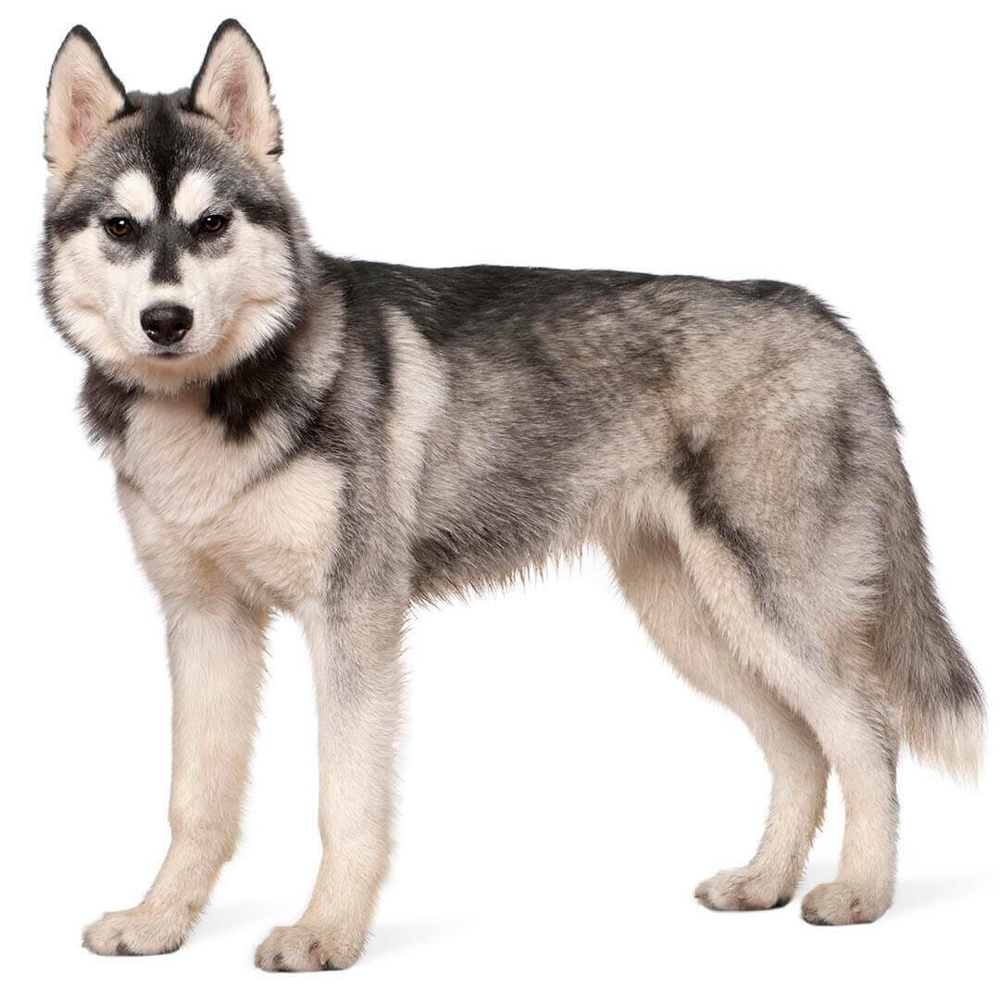

El huski siberiano es una raza de perro de trabajo originaria del norte de Siberia en Rusia. Este perro fue creado por la tribu Chukchi como perro de trabajo para trineos a travez de largas distancias durante sus partidas de caza, sirviendo asi como vehiculo de transporte rapido para las presas en la vueltas al poblado Ek Husky es un perro de tamaño mediano cuyas proporciones insinúan un equilibrio perfecto entre potencia, velocidad y resistencia. Con su pelaje de doble manto y longitud media, sus orejas erguidas y su cola tipo cepillo, esta raza puede presentar colores y manchas muy diversas, incluyendo el blanco, con algunos ejemplares de colorido notable. Los machos adultos miden entre 53 y 60 cm y las hembras, entre 51 y 56 cm. Los machos pesan de 20 a 27 kg y las hembras, de 16 a 23 kg.
Esta raza es muy conocida por su buen carácter y por ser muy cariñosa con la gente, por lo que no son perros guardianes por naturaleza. Les encanta y necesitan estar acompañados y no deberán quedarse solos durante mucho tiempo, ya que pueden volverse muy destructivos. Les gusta estar con otros perros bien adiestrados, aunque son cazadores ágiles y eficientes, por lo que deberán adiestrarse con cuidado para que puedan estar en contacto con otros animales domésticos. Aunque no suelen ladrar, sí que aúllan, a veces solo por el simple placer de hacerlo.
Esta raza ya la empleaban los chukchis, un pueblo paleosiberiano del río Kolyma (Siberia) en el siglo XIX. El carácter noble de esta raza podría atribuirse probablemente al magnífico cuidado que recibió por parte de los chukchis. Como los trineos de perros eran el medio de transporte principal, los huskies eran de una importancia vital para los nativos. Los primeros huskies siberianos llegaron a Alaska a principios del siglo XX, donde se les sigue conociendo como chukchis. Las carreras de trineos se volvieron populares y la velocidad de esta raza asombraba y servía de inspiración para los perros de carreras de Estados Unidos. Fue entonces cuando los norteamericanos renombraron a este perro y lo llamaron Husky siberiano.
